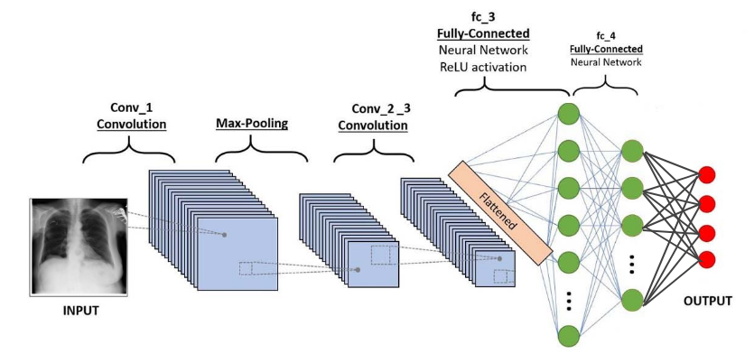

NIH Chest X-ray Classifier
In my Applied Fundamentals of Machine Learning course (APS360) at UofT, I developed neural network models in a group to classify Chest X-ray Images. We used the NIH Chest X-rays TFRecords dataset to train two convolutional neural network models using PyTorch.
We modified our dataset only to include the three most prominent diseases: Atelectasis, Infiltration, and Effusion, as well as the one third of the No Finding data, to balance our dataset. The data was stored in TensorFlow format but since our course was on PyTorch we converted the TensorFlow tensors to PyTorch.
Our final CNN model is depicted above and it reached a maxium accuracy of 72% on our test dataset. In general, our model was unsuccessful in terms of being used on real patients, however it was a good learning experience for learning how to train neural networks on such a large unbalanced dataset.
GitHub Project Repository